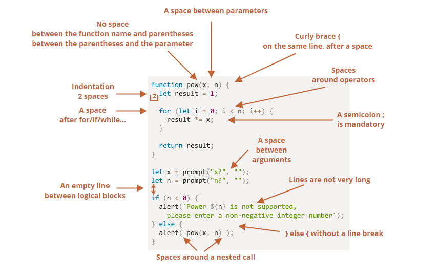

Reading Notes
This was really important for me cause this week for me. I used the debugger to fix many bugs on the team acvtivity page this week. The breakpoints are specially important to see the how the code is executing until that point.
We can also pause the code using the "debugger" command. This was my principal tools this week. By simply writting debugger on the js file I can see how the code behaves until that point and I can evaluate the code from the dev Tools!
1. Watch – shows current values for any expressions.
You can click the plus + and input an expression. The debugger will show its value, automatically recalculating it in the process of execution.
2. Call Stack – shows the nested calls chain.
At the current moment the debugger is inside hello() call, called by a script in index.html (no function there, so it’s called “anonymous”).
If you click on a stack item (e.g. “anonymous”), the debugger jumps to the corresponding code, and all its variables can be examined as well.
3. Scope – current variables.
Local shows local function variables. You can also see their values highlighted right over the source.
Global has global variables (out of any functions).
There’s also this keyword there that we didn’t study yet, but we’ll do that soon.
Resume”: continue the execution, hotkey F8.
Resumes the execution. If there are no additional breakpoints, then the execution just continues and the debugger loses control.
I used this one often when I just needed to see one debugger but didn't want to erase the rest yet.
– “Step”: run the next command, hotkey F9.
Clicking this again and again will step through all script statements one by one.
-“Step over”: run the next command, but don’t go into a function, hotkey F10.
If we compare them, the “Step” command goes into a nested function call and pauses the execution at its first line, while “Step over” executes the nested function call invisibly to us, skipping the function internals.
The execution is then paused immediately after that function call.
That’s good if we’re not interested to see what happens inside the function call.
– “Step into”, hotkey F11.
That’s similar to “Step”, but behaves differently in case of asynchronous function calls. If you’re only starting to learn JavaScript, then you can ignore the difference, as we don’t have asynchronous calls yet.
For the future, just note that “Step” command ignores async actions, such as setTimeout (scheduled function call), that execute later. The “Step into” goes into their code, waiting for them if necessary. See DevTools manual for more details.
– “Step out”: continue the execution till the end of the current function, hotkey Shift+F11.
Continue the execution and stop it at the very last line of the current function. That’s handy when we accidentally entered a nested call using , but it does not interest us, and we want to continue to its end as soon as possible.
– enable/disable all breakpoints.
That button does not move the execution. Just a mass on/off for breakpoints.
– enable/disable automatic pause in case of an error.
When enabled, if the developer tools is open, an error during the script execution automatically pauses it. Then we can analyze variables in the debugger to see what went wrong. So if our script dies with an error, we can open debugger, enable this option and reload the page to see where it dies and what’s the context at that moment.
It is important to have a good syntax when working with a team so our code is readable and easy to maintain.
Here we have a guide of the rules to take in mind when writing, I will come here often to check on this.
Currently the team is using an Automated linter to format our code and do improvements in the way we do coe and make it uniform, but it is also important try to learn and use the same style guide when working with other persons anyway.
The try...catch statement is comprised of a try block and either a catch block, a finally block, or both. The code in the try block is executed first, and if it throws an exception, the code in the catch block will be executed. The code in the finally block will always be executed before control flow exits the entire construct.
try {
....tryStatements
...} catch (exceptionVar) {
.....catchStatements
...} finally {
....finallyStatements
...}
tryStatements
The statements to be executed.
catchStatements
Statement that is executed if an exception is thrown in the try-block.